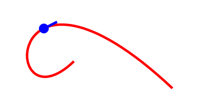

PathPointX()
语法
Result.d = PathPointX(Distance.d)概要
Returns the X coordinate of the point at the given distance from the start of the current vector drawing path.
参数
Distance.d Specifies the distance from the start of the path. If this parameter is negative or larger than the total path length, the start/endpoint of the path is returned. The full length of the path can be determined with PathLength().
返回值
The X coordinate of the point of the path.
示例
If OpenWindow(0, 0, 0, 400, 200, "VectorDrawing", #PB_Window_SystemMenu | #PB_Window_ScreenCentered) CanvasGadget(0, 0, 0, 400, 200) If StartVectorDrawing(CanvasVectorOutput(0)) ; construct path MovePathCursor(150, 125) AddPathCurve(0, 270, 0, -150, 350, 180) ; get location & angle of point on the path x = PathPointX(200) y = PathPointY(200) a = PathPointAngle(200) ; stroke the path VectorSourceColor($FF0000FF) StrokePath(5) ; draw a marker at the path point AddPathCircle(x, y, 10) VectorSourceColor($FFFF0000) FillPath() MovePathCursor(x, y) AddPathLine(30*Cos(Radian(a)), 30*Sin(Radian(a)), #PB_Path_Relative) StrokePath(5) StopVectorDrawing() EndIf Repeat Event = WaitWindowEvent() Until Event = #PB_Event_CloseWindow EndIf
参阅
PathPointY(), PathPointAngle(), PathLength()
已支持操作系统
所有